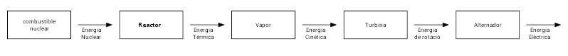

Centrals nuclears#
Pàgina en desenvolupament
Encara estem treballant en aquest document.
Esperem oferir-vos properament el seu contingut.
Disculpeu les molèsties.
Com ja hem comentat, les centrals nuclears no deixen de ser unes centrals tèrmiques on la calor per generar vapor es produeix mitjançant una reacció nuclear. Per tant, molts dels seus elements ja són coneguts nostres, i ens centrarem en els aspectes mes diferenciats.

Combustible nuclear#
Les centrals nuclears actualment en funcionament utilitzen exclusivament reaccions de fissió nuclear, es a dir, el trencament de nuclis pesats en altres més lleugers. Típicament s’utilitza l’urani \(^{235}U\) , per la seva relativa abundància a la Pechblenda i d’altres minerals.
\(^{235}U + n \to \ ^{93}Kr + \ ^{140}Ba + 3n \)
Aquesta és només una de les diferents formes en que té l’urani \(^{235}U\) la seva fissió, que permet diferents combinacions de fragments amb 33 < Z < 59 seguint una distribució estadística, amb un fragment al voltant de A=95 (Br, Kr, Zr) i l’altre al voltant de A=139 (I, Xe, Ba).

L’urani \(^{235}U\) es troba a la barra de combustible en una proporció molt baixa (0,7% si s’utilitza en estat natural), on la proporció de \(^{238}U\) arriba al 99,3 % i que no es desintegra, però es capaç d’absorbir neutrons i generar \(^{239}Pu\), que si que és combustible nuclear. Per aquest motiu el \(^{235}U\) es considera un material fèrtil. Moltes vegades la proporció de \(^{235}U\) s’incrementa prèviament i parlem d’urani enriquit.
Les barres de combustible porten l’urani en forma d’òxid \(UO_2\)
L’absorbent#
Com heu vist a la reacció anterior en surten més neutrons dels que entren. En aquesta situació tindríem una reacció en cadena, que produiria una explosió com a Hirosima. Per evitar això s’utilitzen unes barres amb un material que absorbeix els neutrons, com ara alliatges de B, Cd, Ag i In. Aquestes barres es poden desplaçar, deixant passar més o menys neutrons i controlant la reacció.
El moderador#
Per optimitzar la reacció és necessari baixar la velocitat dels neutrons emesos. Per això se’ls fa xocar amb materials amb àtoms petits, com ara l’aigua (normal o pesant, es a dir, amb l’isòtop deuteri de l’hidrogen) o el grafit.
El refrigerant#
Cal portar la calor generada per la reacció al generador de vapor de la central. S’aconsegueix amb el refrigerant, ja sigui líquid (aigua, Na, K) o gas (\(CO_2\), He, \(H_2\), \(N_2\))
Mur de contenció#
Les parts més sensibles de la central, que produeixen radiació amb el conseqüent perill estan aïllades per un mur de contenció molt gruix de formigó, que impedeix que surti la radiació.
A més a més tota la central està dotada de pressió negativa, es a dir, cada sala té una pressió inferior a la sala exterior contigua, per evitar que surti cap tipus de partícula.
Reactors PWR#
Els reactors d’aigua a pressió (Pressurized Water Reactor) utilitzen aigua a alta pressió com a moderador, refrigerant i també per generar el vapor que travessa les turbines. Com l’aigua lleugera captura més neutrons que l’aigua pesant, el combustible utilitzat és urani enriquit al 2% - 4 %.
Utilitza tres circuits de refrigeració: el primari, amb aigua a alta pressió (16 MPa), recull la calor del nucli del reactor. El circuit secundari rep aquesta energia del primari al generador de vapor. Com l’aigua del circuit secundari no ha estat en contacte directe amb el reactor pot sortir de l’edifici de contenció cap a les turbines. El circuit terciari s’utilitza per refredar el condensador, com a les centrals tèrmiques convencionals.

|
Esquema d'una central nuclear PWR. V: Reactor C: combustible T: turbina, G: alternador B: generador de vapor K: condensador, P1: circuit primari P2: circuit secundari El circuit terciari és el que es veu en part, en gris clar, a K, entra aigua per a refredar la de P2 a K, fins a condensar-la, de manera que la del circuit terciari surt escalfada cap a la torre de refrigeració. La línia negra gruixuda indica que es troba dintre de l’edifici de contenció. En aquestes centrals només el reactor i el generador de vapor necessiten aquesta protecció, ja que el fluid que mou les turbines no ha tingut contacte directe amb el nucli del reactor. |
Les barres de control es desplacen per la banda superior del reactor: com més avall més neutrons s’absorbeixen. Això és molt interessant: en cas de problemes es deixen caure les barres i la reacció s’atura. Deixar caure les barres no requereix gaire energia, i si falla el servosistema sempre es pot tallar el filferro que eleva la barra amb un robot, una petita càrrega explosiva o amb intervenció humana, aquesta última com a darrer recurs.
Al voltant del 60% dels reactors nuclears al món són d’aquest tipus.
Reactors BWR#
Els reactors d’aigua bullent (Boiling Water Reactor) utilitza aigua com a refrigerant i moderador, i també per generar el vapor que travessa les turbines i que es produeix directament al reactor.
Com les turbines reben vapor generat en contacte directe amb el reactor (a 7,6 MPa, 285 °C) han d’estar protegides dintre de l’edifici de contenció. A més a més el vapor s’ha de recollir a la banda superior del reactor, per tant les barres de control han de entrar per la banda inferior i necessiten energia per elevar-les i aturar el reactor. Cap dels sistemes d’emergència explicats al reactor PWR és aplicable en els reactor BWR: sense energia externa no es pot aturar el reactor.
En aquest reactors només troben dos circuits de refrigeració: el primari, que travessa el reactor i les turbines; i el secundari, que refreda el condensador.

|
Esquema d’una central BWR 1 Reactor 2 Combustible 3 Barres de control 4 Bombes de circulació 5 Motors de les barres de control 6 Vapor 8 Turbina alta pressió 9 Turbina baixa pressió 10 Alternador 12 Condensador 15 Bomba circuit primari 16 Bomba circuit secundari 18 Connexió al transformador Fixeu-vos com tot el conjunt ha d’estar protegit per l’edifici de contenció |
Al voltant del 25 % de centrals nuclears arreu del mon són del tipus BWR
Recanvi del combustible#
Com les barres de combustible centrals són les que més han reaccionat, aquestes són reemplaçades per barres més externes, successivament, i utilitzant barres noves per reemplaçar les més exteriors.
Les barres gastades es deixen refredar a una piscina uns mesos. Després s’envien per tren a centres especialitzats en el seu aprofitament (militar moltes vegades, recordem que l’urani genera ) o a cementiris nuclears.
Inèrcia de les centrals nuclears#
Donada la complexitat i perillositat d’aquestes centrals s’han de fer moltes comprovacions en els cicles d’aturada/posada en marxa. No és estrany períodes de 2-3 dies per aquesta tasca. Recanvis de combustible, desconnexions de la xarxa elèctrica, petites fuites… A més a més es necessita energia fiable per portar-les a terme, per la qual cosa s’acostuma a construir una petita central tèrmica al seu costat.
Aquesta inèrcia no permet aturar la central a la nit, quan la demanda a la xarxa baixa. Si a la nit fa vent, moltes vegades s’han de desactivar els aerogeneradors ja que la xarxa no necessita tanta energia i no és capaç d’emmagatzemar-la, ja que es prioritza mantenir les centrals nuclears en marxa. Aquest malbaratament de l’energia es podria evitar construint a prop de les centrals nuclears centres d’emmagatzemament d’energia, en forma d’hidrogen o amb centrals hidràuliques reversibles. Aquestes instal·lacions permetrien també no haver d’aturar les centrals nuclears en cas de desconnexió de la xarxa.
Objectiu estratègic#
Tota instal·lació energètica és un objectiu estratègic de terroristes i guerres, però les centrals nuclears són especialment sensibles. Per això l’accés està molt restringit, amb perímetres d’exclusió al seu voltant, sensors de metalls i explosius… L’edifici de contenció té forma de cúpula com a defensa d’impactes de míssils o avionetes. No es estrany trobar regiments d’artilleria antiaèria o destacaments de la força aèria a prop seu. Els trens que transporten els residus nuclears són fortament custodiats.
Impacte ambiental#
Els defensors de l’energia nuclear destaquen els seus avantatges: no produeix CO2, gasten poc combustible i fins-i-tot el poden generar (l’urani genera que es podria profitar en altres centrals optimitzades)…
Per altra banda els detractors destaquen els seu problemes:
Els residus tenen un tractament incert, atès que són radioactius per molts anys. Si bé fins fa unes dècades s’abocaven a fosses marines, avui en dia no és una opció ja que les dorsals oceàniques són molt actives. Cal destacar les accions de Greenpeace que van aconseguir la seva prohibició. Avui en dia l’opció amb més adeptes és l’emmagatzematge a cementiris nuclears, típicament mines en desús a gran fondària en entorns geològics adients. Espanya encara no el té resolt: paga a altres països (França. UK) per emmagatzemar temporalment els seu residus, que a la llarga tornaran al nostre país. Entre 1985 i 2005 Espanya va pagar en concepte de gestió de residus radioactius d’alta activitat la quantitat de 1 400 000 000 €.
Si bé les mesures de seguretat és alta, no són estranys els incidents nuclears. Trobareu una llista detallada a https://en.wikipedia.org/wiki/Nuclear_and_radiation_accidents_and_incidents i https://en.wikipedia.org/wiki/Lists_of_nuclear_disasters_and_radioactive_incidents . Cal ressaltar els accidents de Txernòbil i Fukushima:
L’accident de Txernòbil, el 26 d’abril de 1986, s’ha considerat el més greu de la història. En unes proves de millora del rendiment, en que es van anul·lar criteris de seguretat, un augment sobtat de potència al reactor número 4 de la central va provocar l’explosió de l’hidrogen acumulat dins del nucli pel sobreescalfament. L’incendi va durar 10 dies. 130 000 persones van ser evacuades. Van haver d’intervenir més de 800 000 liquidadors, la majoria dels quals va acabar morts o malalts. L’esperança de vida a Ucraïna va passar de 79 anys a 55 arran de l’accident. El 40% del territori europeu es va contaminar amb els productes dispersats a l’atmosfera. El núvol amb \(^{131}I\) - que provoca càncer de tiroides- va arribar a molts països propers. La zona de Txernòbil romandrà altament contaminada i inhabitable per 40 000 anys.
A Fukushima el 11 de març del 2011 un tsunami va fer malbé la connexió a la xarxa elèctrica i la central tèrmica auxiliar de la central. L’aplicació del protocol d’emergència, que forçava l’aturada de la central, va ser desastrós: sense energia externa per mantenir el circuit de refrigeració el sobreescalfament va originar explosions, incendis i emissió radioactiva. La mala ubicació de les piscines de residus va empitjorar tot: l’evaporació sobtada de l’aigua de les piscines va deixar a descobert els residus nuclears. Una esquerda a l’estructura del reactor va alliberar material radioactiu al mar, especialment \(^{131}I\) i \(^{137}Cs\), que han estat detectats tan a les costes d’EEUU com d’Europa.